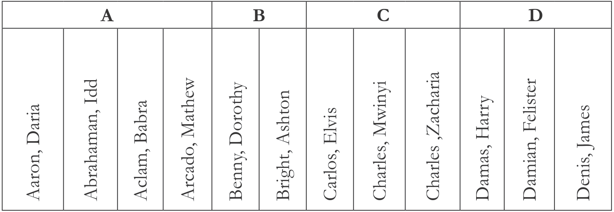
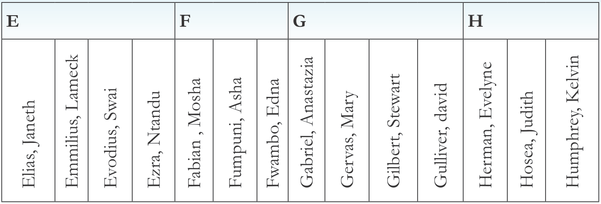
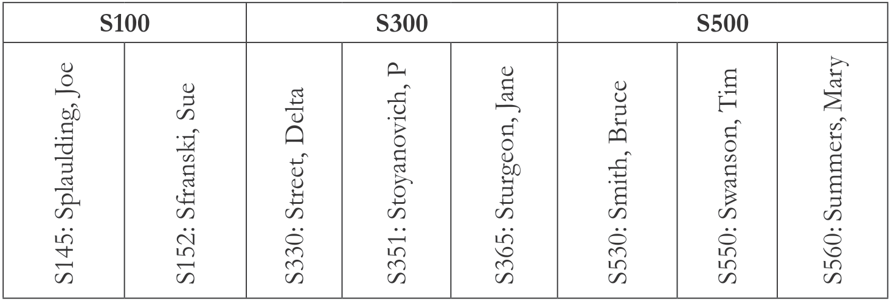
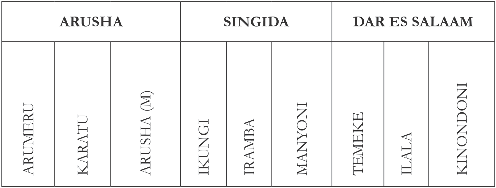
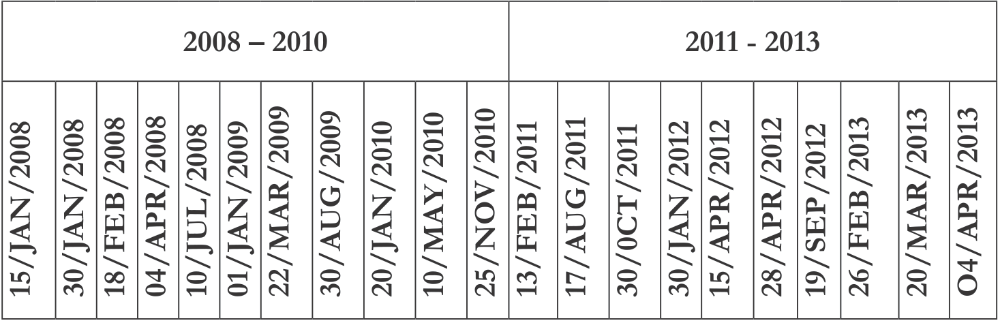
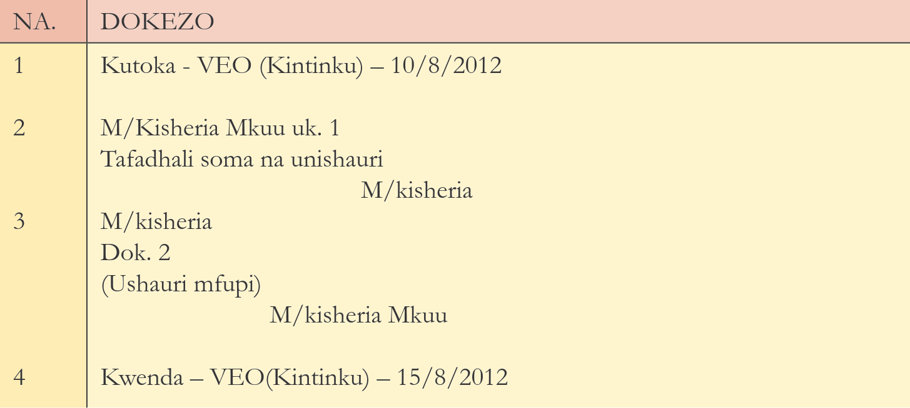
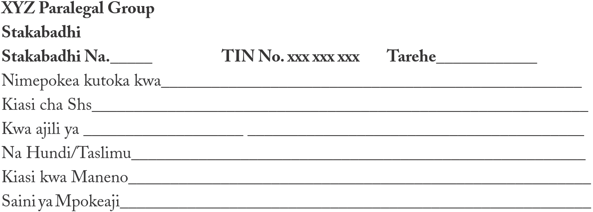
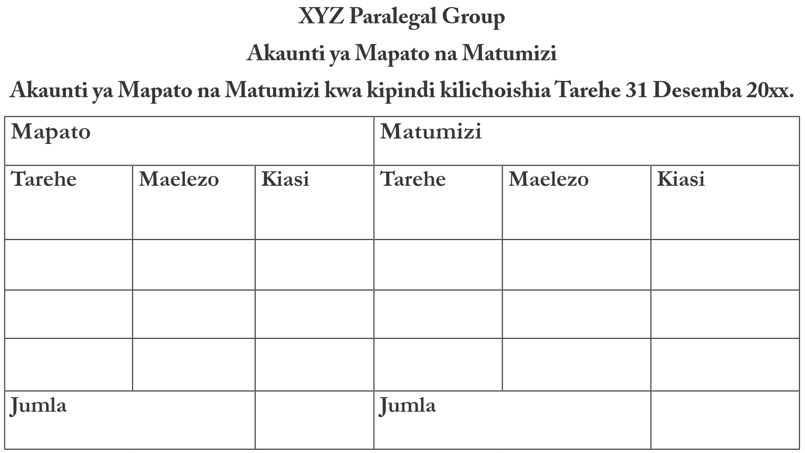
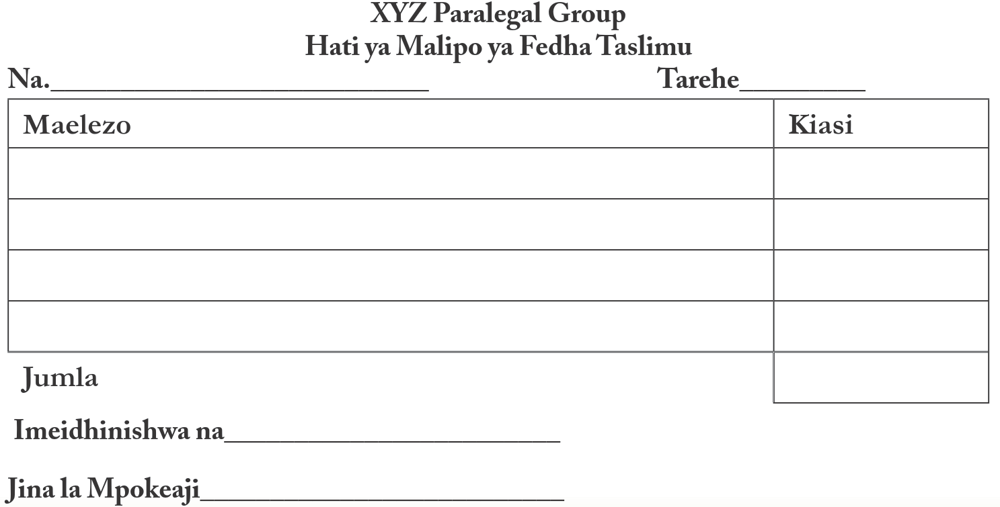
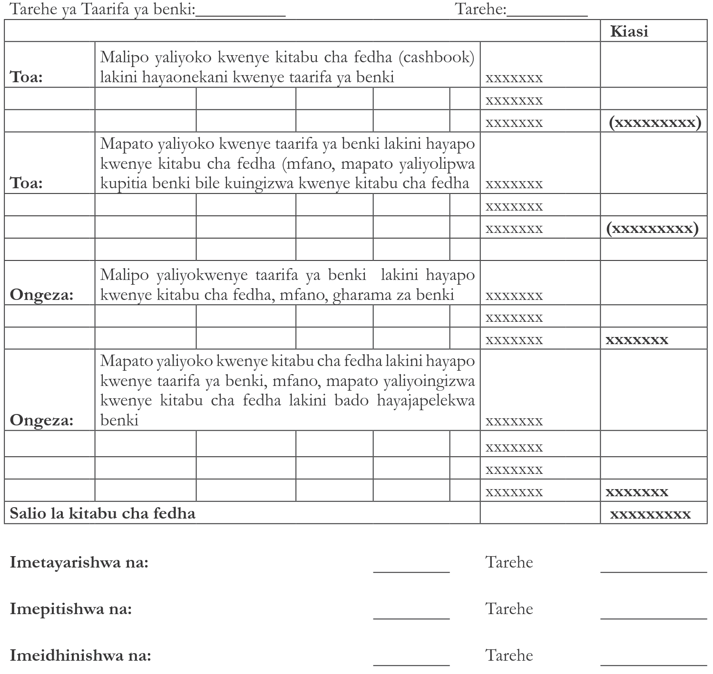

Sehemu ya Kwanza: Utunzaji Wa Kumbukumbu Na Utawala Wa Ofisi
Uendeshaji wa tasisis yoyote unahitaji rasimali mbalimbali zikiwamo Kumbukumbu, Watumishi, Majengo/ofisi, Wateja, Mtaji/fedha na Vitendea kazi. Pamoja na umuhimu wa kila rasilimali kama tulivyo zitaja hapo juu katika maada hii tutaongelea utunzaji wa kumbukumbu katika uendeshaji wa taasisi yoyote.
Kumbukumbu ni uti wa mgongo wa taasisi yoyote ile. Pia ni damu na mishipa ya kusafirishia taarifa ndani na nje ya taasisi. Hutumika kuweka taarifa za kazi za kila siku, mipango na mikakati ya taasisi. Mifumo mizuri ya utunzaji kumbukumbu katika taasisi inasaidia katika suala zima la uwajibikaji na uwazi. Kila msaidizi wa kisheria anahitajika kufuata taratibu zinazoongoza shughuli za utunzaji kumbukumbu katika utekelezaji wa majukumu yake ya kila siku, utoaji maamuzi, taratibu za kazi na katika mahusiano na taasisi nyingine na watu binafsi.
Kila taasisi inahitaji kumbukumbu katika kazi zake za kila siku na ustawi wake. Kumbukumbu hizi ni pamoja na: barua, taarifa za taasisi, ramani, orodha ya uandikishaji, taarifa za kibenki n.k.
Ni taarifa
Muundo unazingatia namna kumbukumbu ilivyoandaliwa na inavyopatikana. Kwa hiyo kuna aina mbili za muundo wa kumbukumbu kama zinavyoonekana hapa chini:
Hapa kinachoangaliwa ni taarifa iliyoko katika kumbukumbu husika kama inahitaji uangalizi au ulinzi wakati inaandaliwa au wakati wa kuitumia. Suala la kujiuliza hapa ni kwamba, endapo itasomwa na mtu asiyekusudiwa itakuwa na madhara yoyote? Kama madhara yatakuwepo ni kwa kiasi gani? Kwa hiyo, kwa kuzingatia unyeti wa kumbukumbu tunakuwa na aina zifuatazo katika kupanga unyeti wa kumbukumbu:
Hizi ni taarifa zinazohitaji ulinzi wa hali ya juu kwani kuonekana/kujulikana kwake na mtu asiyehusika kunaweza kusababisha maafa makubwa kwa taifa/ taasisi husika. Majalada ya jinsi hii ni nadra kupatikana katika ofisi za kawaida bali katika ofisi kuu, kama vile Ofisi ya Rais, Ofisi za Kamanda Mkuu wa Polisi, Ofisi za Wakurugenzi, n.k Taarifa hizi ni pamoja na zile zinazohusu:
Pamoja na utunzaji, usafirishaji pia wa taarifa hizi hutumia vifaa kama masanduku yenye kufungwa na ufunguo.
Hizi ni taarifa ambazo zinahitaji usalama na endapo zitajulikana na mtu asiyehusika kunaweza kutokea madhara makubwa ama kuhatarisha usalama wa taifa au taasisi husika. Mfano: Taarifa kuhusu ulinzi na usalama wa nchi, mipango ya usalama wa kimataifa na dharura, taarifa za kikachero kuhusu hali ya kisiasa, taarifa binafsi za mteja, wosia n.k.
Usafirishaji wa taarifa za jinsi hii ndani ya taasisi hutumia bahasha mbili na ikiwa ni nje ya ofisi kisanduku chenye kufuli na funguo hutumika.
Ni taarifa za kiofisi zinazohitaji usalama ili asiyehusika asiweze kuzijua. Taarifa hizi zikijulikana kabla ya muda wake, huweza kuleta madhara au mtafaruku kiutawala. Mfano: taarifa za kikachero, taarifa za siri za kila mwaka, kupandishwa cheo, kuteuliwa kuwa mkuu wa kitengo, barua ya onyo, kufukuzwa kazi, kushushwa cheo, taarifa za wateja, jalada la kesi mahakamani, hukumu kabla ya kusomwa, miswada kabla ya kufikishwa kwa wadau n.k. taarifa za namna hii husafirishwa nje ya taasisi kwa kutumia bahasha mbili na ikiwa ndani ya ofisi, bahasha moja hutumika.
Hizi ni taarifa kuhusu utendaji kazi wa kila siku katika taasisi na majalada yake hubebwa wazi yakisafirishwa kutoka ofisi moja kwenda nyingine ndani ya taasisi. Hii haimaanishi kwamba kila mtu anaweza kuyafikia bali wale watakaokuwa wanahusika kuyafanyia kazi. Mfano wa taarifa hizi ni kama: taarifa ya mwaka ya utendaji kazi, maombi ya vifaa vya kazi, madai ya fedha, mihutasari ya vikao vya kamati za uendeshaji n.k.
Pia aina za kumbukumbu zimegawanywa kwa kuzingatia umiliki kama ifuatavyo:
Hizi ni kumbukumbu zinazohusiana na masuala ya kiutendaji katika ofisi, na ni mali ya ofisi husika.
Kumbukumbu za namna hii humilikiwa na watu binafsi. Mfano wa kumbukumbu hizi ni pamoja na vyeti vya ndoa, vyeti vya kuzaliwa, vyeti vya kuhitimu masomo, hati ya kusafiria n.k.
Katika taasisi yoyote ile, kumbukumbu hutokana na kazi za kila siku zinazofanyika katika ofisi husika. Baadhi ya vyanzo hivyo ni pamoja na:
Kumbukumbu huhifadhiwa katika majalada na kupangwa kuzingatia mfumo husika. Kila mfumo wa kutunza kumbukumbu una hasara na faida zake. Mifumo inayotumika ni pamoja na ifuatayo:
Hii ni aina ya mfumo wa utunzaji kumbukumbu ambao hutumia alfabeti katika kupanga majalada ya watu au watumishi. Ni mfumo wa utunzaji kumbukumbu unaotumika kwa kiasi kikubwa ukilinganishwa na mifumo mingine. Kinachoangaliwa hapa ni herufi za jina au neno la kwanza la jalada. Kila alfabeti inakuwa na sehemu yake ya kuhifadhia majalada yanayoendana nayo, kuanzia A mpaka Z kama inavyoonekana hapa chini.
Aaron Daria, Benny Dorothy, Bright Ashton, Carlos Elvis, Charles Mwinyi, Damas, etc
Elias Janeth, Fabian Mosha, Gabriel Anastazia, Gervas Mary, Herman Evelyne, Hosea Judith, etc.
Huu ni mfumo unaotumia namba katika kupanga majalada yake. Mfumo huu hutumika pale ambapo namba ni sehemu ya kumbukumbu husika au pale namba inapotumika kuwezesha upangaji wake. Inapotokea kuwa namba ni sehemu ya kumbukumbu; basi namba husika zitatumika katika mfumo huo. Endapo namba zitatumiwa kuwakilisha taarifa zilizoko katika jalada, basi ni lazima zibainishe somo husika. Kwa mfano:
001-100 : HUDUMA ZA KISHERIA
101-200 : KESI
201-300 : UTAWALA
| 001 - 100 | 101 - 200 | 201 - 300 |
|---|---|---|
| HUDUMA ZA KISHERIA | KESI | UTAWALA |
Wakati mwingine majalada yanaweza kupangwa kwa kutumia mchanganyiko wa namba na alfabeti kwa pamoja. Mpangilio huu hutumia ―codes― ambazo hutoa taarifa kuhusu kilichomo ndani ya jalada. Mfumo huu umegawanyika katika sehemu mbili majalada ya somo na majalada ya majina (watumishi). Majalada ya watumishi hupangwa kialfabeti kulingana na majina yanavyotamkwa na kuandikwa. Mfano wa mfumo huu ni kama inavyoonekana hapa chini.
Baadhi ya kumbukumbu hupangika vizuri kwa kutumia majina ya sehemu. Kwa mfano, unaweza kuanza na jina la mkoa ambako kutakuwa na majalada yote kutoka mkoa husika, zikafuatia wilaya zilizoko mkoani huko baadaye tarafa na hatimaye kata za tarafa hiyo. Mfumo wa namna hii huitwa wa kijiografia.
Ni mfumo wa utunzaji kumbukumbu unaopanga majalada kwa kuzingatia tarehe ambazo kumbukumbu hizo zimeandaliwa ama kupokelewa. Kwa hiyo, mpangilio hufuata mwaka, mwezi na tarehe ya siku husika.
Wasaidizi wa Kisheria wanahitaji kujua namna ya kuandaa na kuitumia mifumo hii ipasavyo katika uendeshaji bora wa ofisi.
Wakati wa kupanga kumbukumbu, wasaidizi wa kisheria wanatakiwa kuhakikisha kuwa kumbukumbu zote zinazohusiana na kesi husika zinatunzwa pamoja katika jalada moja. Kumbukumbu ni vyema zitunzwe kwa usalama katika jalada zikiwa zimefungwa kwa kutumia kamba maalum. Zinatakiwa kupangwa kuanzia kumbukumbu ya zamani (chini) zikifuatana kulingana na zilivyoingia mpaka ya mwisho (iliyopokelewa karibuni –mpya) ambayo itakuwa juu kabisa. Inapotokea kumbukumbu haiwezi kuwekwa kwenye jalada, pengine kwa sababu ya ukubwa wake, basi barua inayohusiana na kumbukumbu hiyo iwekwe kwenye jalada kwa kuonesha iliko kumbukumbu husika. Kisha kumbukumbu iwekwe kwenye kabati ikionesha jalada na namba ya ukurasa ilipotakiwa kuwekwa ili kurahisisha uoanishaji wa hizo kumbukumbu.
Maisha ya kumbukumbu hulinganishwa na maisha ya viumbe hai kwa maana kuwa huzaliwa, huishi na hufikia ukomo wa maisha (zinakufa). Zinapofikia ukomo wa maisha, yaani pale ambapo hazihitajiki kabisa katika matumizi ya kila siku ya ofisi, hutathminiwa ili kuzibaini zile zenye umuhimu wa kudumu na zile zisizokuwa na umuhimu wa kudumu. Kumbukumbu zinazobainika kutokuwa na umuhimu wa kudumu huharibiwa kwa kufuata taratibu zilizowekwa; na kwa upande mwingine zile zenye umuhimu wa kudumu huendelea kutunzwa sehemu salama.
Barua/nyaraka zinapopokelewa katika masjala (ofisi ya kumbukumbu), kumbukumbu hizi huwa ni hai na matumizi yake ni kama ifuatavyo:-
Baada ya miaka mitatu kumbukumbu huwa tuli. Katika hatua ya kumbukumbu tuli, taasisi zinatakiwa kuangalia umuhimu wa kila kumbukumbu na kuamua kama zinapaswa kutunzwa kwa muda gani kabla ya kuziteketeza au kuzifadhi kama nyaraka zenye umuhimu wa pekee kihistoria au kisheria. Kwa mfano, serikalini kazi hii hufanyika kwa ushirikiano na wataalam wa Idara ya Kumbukumbu na Nyaraka za Taifa kutoka Ofisi ya Rais, Menejimenti ya Utumishi wa Umma. Hii ni kwa mujibu wa Taratibu za Uhifadhi na Uteketezaji wa Kumbukumbu za Mwaka 2005.
Kumbukumbu za namna hii ni zile zisizotumika kabisa katika kazi za kila siku. Katika hatua hii, kumbukumbu zinatengwa katika makundi mawili. Kundi la kwanza; ni lile lenye kumbukumbu zisizo na umuhimu wowote ambazo huteketezwa. Kundi la pili; ni la kumbukumbu zenye umuhimu wa kihistoria au kisheria kama vile mikataba, hukumu za kesi za kipekee.
Upande wa serikali, utunzaji kumbukumbu za aina hii ni wa kudumu na hapa kwetu Tanzania, hufanywa na Idara ya Utunzaji Kumbukumbu na Nyaraka za Taifa.
Uendeshaji wa ofisi yoyote ile hutegemea sana majalada ambapo taarifa zinazohusu jinsi shughuli zilivyofanyika, zitakavyofanyika ama zinavyotakiwa kufanyika huwepo. Taratibu zote zinazoongoza kazi husika hutakiwa kufuatwa katika utendaji kazi. Shughuli zote zinazofanyika katika ofisi husika hujidhihirisha katika majalada yaliyopo. Kwa hiyo kutakuwa na barua, ripoti, vocha, mihutasari ya vikao, miongozo, sheria, kanuni n.k Majalada yote mapya yatafunguliwa na wasidizi wa kisheria kwa kuzingatia miongozo iliyopo.
Aina za Majalada:
Kwa utunzaji bora wa kumbukumbu, Wasaidizi wa Kisheria watapaswa kuzingatia yafuatayo:
Kumbukumbu zote zilizo ndani ya jalada zinapaswa kuwa na maelezo mafupi upande wa kushoto wenye makaratsi yaliyoandikwa dokezo. Kila barua/kumbukumbu inayoingizwa au nakala ya barua iliyotumwa nje ya ofisi iorodheshwe katika mkono wa kushoto kama inavyoonyeshwa hapa chini.
Namba zilizo katika dokezo‘ zitakuwa ni 1,2,3,4, n.k.b kwa kadri zitakavyoongezeka. Kama ilivyoelezwa hapo juu dokezo ni mawasiliano ya ndani ya ofisi husika kuhusiana na barua zilizoingia ndani ya jalada. Barua moja inaweza kuwa na dokezo moja au zaidi. Lakini kurasa ndani ya jalada (folio) zitakuwa 1, 2, 3, 4, na kuendelea -kwa mujibu wa mfano wetu.
Kurasa/folio ni zile barua ambazo zimeingia katika jalada husika. Katika mfano huo hapo juu, barua zilizoingizwa katika jalada hilo ni mbili tu; ile illiyotoka kwa VEO wa Kintinku (dokezo namba 1) na nyingine ni ile yenye majibu kutoka kwa Msaidizi wa Kisheria kwenda kwa VEO wa Kintinku (dokezo namba 4).
Barua hizi zinatakiwa kuwa na somo moja tu, usichanganye mambo mawili au zaidi katika barua moja. Lugha iwe fasaha na ya kiungwana. Kama barua ina viambatanisho, hakikisha umeviambatanisha kabla ya kupeleka masjala ili kuepuka usumbufu usio wa lazima kwa mpokeaji.
Nakala ya barua iwekwe ndani ya jalada kwa kumbukumbu ya ofisi na nakala nyingine iwekwe kwenye jalada la rejea‘ kwa ajili ya kuzungushwa kwa maafisa wengine kwa ufahamu wa mambo ya ofisi yao.
Kumbukumbu ni uti wa mgongo wa uendeshaji shughuli za taasisi, hivyo hatuna budi kuzingatia utunzaji wake ili kuwezesha utendaji kazi wenye kuleta ufanisi na tija. Tunatakiwa tulione jukumu la utunzaji kumbukumbu kuwa letu sote.
Sehemu ya Pili: Taratibu za Uendeshaji na Usimamizi wa Ofisi
Mwezeshaji eleza kuwa taasisi yeyote ile inahitaji taratibu za uendeshaji na usimamizi wa ofisi ili iweze kutimiza malengo yake. Taratibu hizi kwa lugha ya kitaalam zinajulikana kama UTAWALA yaani utaratibu wa kusimamia raslimali kufanikisha uendeshaji wa shughuli za ofisi.
Kujenga uwezo wa washiriki kufahamu taratibu za uendeshaji wa ofisi na taratibu za usimamizi wa fedha na manunuzi
Baada ya kukamilika mada hii washiriki watafahamu;
Mwezeshaji tumia mbinu ya bungua bongo, jadili na wshiriki maswali yafuatayo:-
Mwezeshaji fafanua kuwa miongoni mwa sababu kubwa zinazosababisha asasi nyingi au vikundi vya kijamii kufa ni pamoja kutotilia maanani au kushindwa kufuata taratibu za fedha. Tatizo hili mara nyingi huzikumba asasi, hasa ndogo, kwa sababu ya kuanzishwa na kuendeshwa na watu wasiokuwa na uelewa wa kutosha kuhusu taratibu za fedha zaasasi wanazozianzisha/wanazoziendesha.
Katika asasi yoyote fedha ni sehemu muhimu ya utekelezaji wa kazi na uendeshaji wa ofisi wa kila siku. Kwa hiyo, ili kuepuka kutumbukia kwenye matatizo ya uendeshaji,asasi zinatakiwa kuhakikisha zinakuwa na mifumo ya ulipaji wa malipo mbalimbali, utunzaji wa kumbukumbu wa taarifa za kifedha na manunuzi ya vifaa na huduma za ofisi. Taratibu za fedhahusaidia shughuli za asasi kuendeshwa kwaufanisi na uwazi.
Pia kuwepo kwa taratibu za fedha ni kiashiria kizuri cha hali nzuri ya asasi. Hata wafadhili wanakuwa wepesi kutoa fedha zao kamaasasi inakuwa na taratibu na inatunza kumbukumbu za fedha. Taratibu za fedha zinazoongoza matumizi ya kila siku ni zana muhimu inayoonyesha utawala bora, uwazi na uendeshaji wa kimfumo wa asasi. Hivyo katika somo hili tutaongelea umuhimu wa kufungua akaunti ya benki, vitabu vya kumbukumbu za fedha, aina na umuhimu wa kutunza kumbukumbu za fedha, namna ya kuandaa na umuhimu wa bajeti na taratibu za manunuzi ya ofisi.
Kama njia moja wapo ya taratibu za kifedha asasi lazima iwe na akaunti benki;
Kitabu hiki kitatumika kupokea mapato ya asasi. Mara nyingi kwenye asasi nyingi mapato yanajumuisha ada za wanachama (kama wapo), misaada kutoka kwa wafadhili, na fedha nyingine zozote zitakazopokelewa kwa ajili ya asasi.
Hiki ni kitabu kinachotumika kuidhinisha malipo kwa kufuata taratibu zifuatazo:-
Hiki ni kitabu ambacho mapato na matumizi yote lazima yaorodheshwe kwenye kitabu hiki.
Mbali ya malipo yanayofanyika kwa kutumia hundi, malipo ya matumizi ya ofisi ya kila siku yanalipwa kwa kutumia fedha kidogo zitakazotunzwa ofisini (petty cash).
Ili kuepuka kuwa na fedha nyingi kwa ajili ya matumizi ya kila siku, kiasi cha juu kinapangwa, kwa mfano, kinaweza kuwa kiasi cha juu kitakuwa ni Tshs 300,000.
Kiwango cha juu kwa ajili ya malipo madogo madogo ya ofisi, mfano wa hapo juu waTshs 300,000 zitatumika mpaka zitakapokaribia kuisha, mfano zikifikia Tshs 50,000 zitaombwa zingine (Tshs 250,000) ili kurudi kwenye kiwango cha juu cha Tshs 300,000.
Kwa hiyo inashauriwa kwamba lazima kuwepo na kiasi cha juu na cha chini cha fedha za matumizi madogo madogo ya ofisi. Kwa mfano kwa kutumia mfano hapo juu kiasi cha juu kinaweza kuwa Tshs 300,000 na cha chini kikawa Tshs 50,000. Maana yake ni kwamba ikishapokelewa Tshs 300,000 (kiasi cha juu), kitaanza kutumika kwa ajili ya matumizi madogo ya kila siku mpaka salio linapofikia Tshs 50,000 (kiasi cha chini) ndipo fedha zingine Tshs 250,000 zinaombwa ili kurudi kwenye kiwango cha juu kabisa cha Tshs 300,000.
Vile vile ili kutenganisha malipo yatakayolipwa kwa hundi na malipo ya fedha taslimu kitawekwa kiwango cha juu cha malipo ya fedha taslimu, mfano, malipo kuanzia Tshs 100,000 kwenda chini yatalipwa kwa fedha taslimu na malipo mengine yoyote kuanzia Tshs 101,000 yatalipwa kwa hundi.
Hata hivyo inasisitizwa kwamba utaratibu unatakiwa kulenga kupunguza matumizi ya malipo ya fedha taslimu.
Kuandaa na kuwa na kumbukumbu za fedha ni muhimu kwani zitakusaidia katika mambo yafuatayo:-
Mapato yatajumuisha ada za wanachama (kama wapo), misaada kutoka kwa wafadhili, na fedha nyingine zozote zitakazopokelewa kwa ajili ya Asasi, mfanostakabadhi.
Hizi ni kumbukumbu kwa ujumla ambazo zinahusiana na gharama za utekelezaji wa kazi za mradi kulingana na mpango kazi na bajeti kama zilivyoidhinishwa. Mfano wa kumbukumbu katika eneo hili ni kama hati za malipo, mikataba ya manunuzi mbalimbali, ankara, nk
Haya ni malipo yanayohusiana na gharama zinazohusu shughuli za uendeshaji wa ofisi wa kila siku, mfano, umeme, maji, ulinzi, nk. Mfano wa kumbukumbu ni kama ankara za maji, umeme, ulizi,
Hii itahitaji kupata Taarifa za benki kwa kila mwezi (Bank Statement) ili kulinganisha na kitabu cha fedha.
Bajeti ni makadirio ya mapato na matumizi ya asasi kwa kipindi fulani cha muda, inaweza ikawa mwezi, robo mwaka, nusu mwaka, mwaka, n.k.
Bajeti inachukua umuhimu wa juu katika utekelezaji wa kazi za asasi kuanzia kupanga mipango, utafutaji wa fedha, utekelezaji wa kazi, ufuatiliaji na tathimini.Utayarisha wa bajeti unatakiwa kuwahusisha wale wote watakaotumia ili wawe na ufahamu wa ndani kuhusu bajeti husika. Ili kurahisisha uelewa juu ya bajeti ni muhimu maelezo ya ziada yakawekwa pia (notes to explain estimates/assumptions).
Utekelezaji wa bajeti unakamilika pale ambapo kazi zilizokuwa kwenye bajeti zikikamilika. Mwisho bajeti inalinganishwa na matumizi halisi ili kujua mahali gani matumizi halisi yalikuwa juu au chini ya bajeti, kwa nini imetokea hivyo na nini kifanyike ili baadaye hali kama hiyo isijirudie.
Utekeleji wa bajeti huwa ni manunuzi ya vitu au huduma. Kwa hiyo sehemu ya manunuzi isipowekewa utaratibu mzuri inaweza ikawa ni mwanzo wa utendaji mbaya wa asasi.
Ili kuondoa hatari ya asasi kujikuta kwenye manunuzi yaliyo nje ya mpango kazi/bajeti ni lazima kuwe na taratibu za manunuzi. Taratibu za manunuzi zinaweza kuwa katika maeneo yafuatayo:-
Asasi inaweza kuweka kiwango fulani cha manunuzi kwa kutumia mtindo wa kununua moja kwa moja toka kwa muuzaji. Kwa mfano inaweza ikawa manunuzi yote yasiyozidi Tshs 200,000 yatanunuliwa moja kwa moja toka kwa muuzaji mmoja.
Haya yanaweza kuwa manunuzi yote yanayoanzia Tshs 201,000 mpaka kiwango cha juu kitakachowekwa. Manunuzi ya aina hii lazima vidadisi bei (angalau vitatu) vitafutwe na moja kati ya vidadisi bei vilivyopokelewa kinachaguliwa kwa kukidhi mahitaji ya bidhaa/huduma husika.
Manunuzi makubwa, mfano kuanzia Tshs 2,000,000 na kuendelea yatafanyika kwa mtindo wa kutangaza zabuni. Taratibu za zabuni zitakuwa kama ifuatavyo:-
Pia lazima kuwa na kamati ya manunuzi ya zabuni, ambayo kazi yake kubwa ni kupitia maombi ya wazabuni na kuchagua/kupendekeza mzabuni aliyeshinda.
Muundo wa kamati ya manunuzi utategemea muundo wa asasi husika. Kwa mfano inaweza kuundwa na mtu wa manunuzi, utawala na fedha, mkuu wa programu, n.k. Mkurugenzi au mkuu wa shirika atakuwa mwidhinishaji wa taarifa ya manunuzi itakayoandaliwa na kamati ya manunuzi.